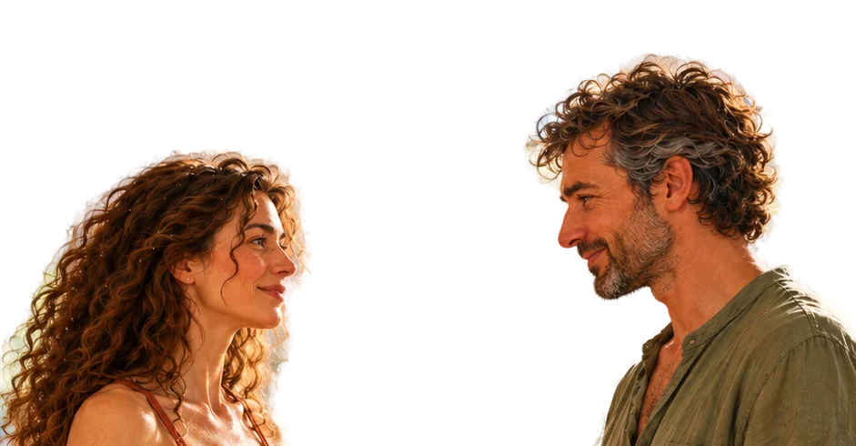
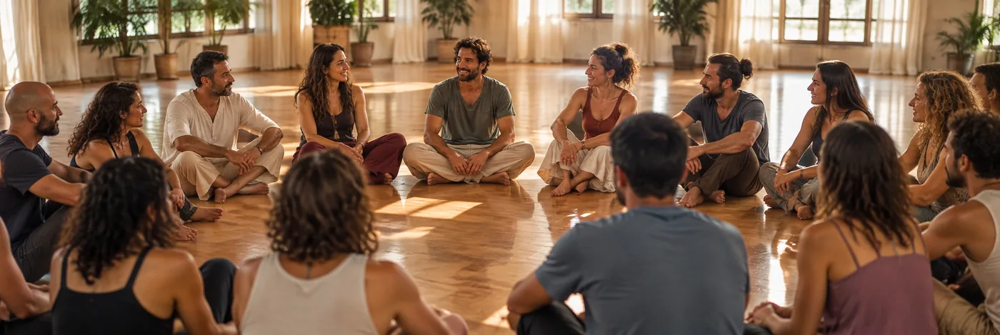
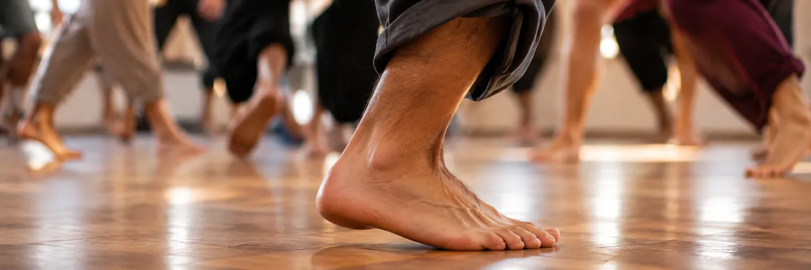
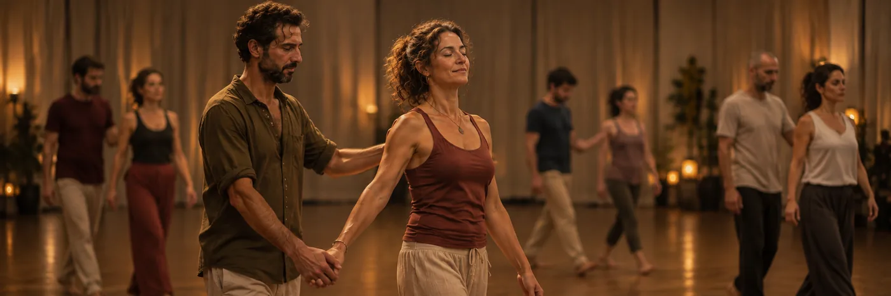
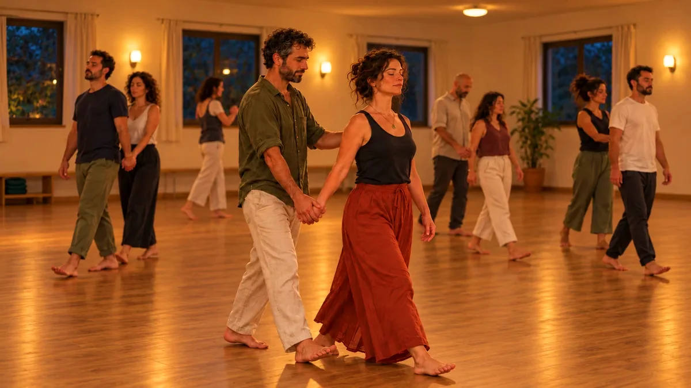
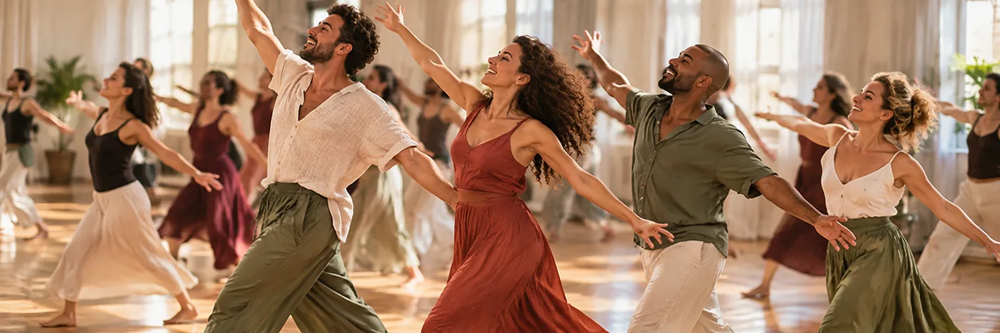
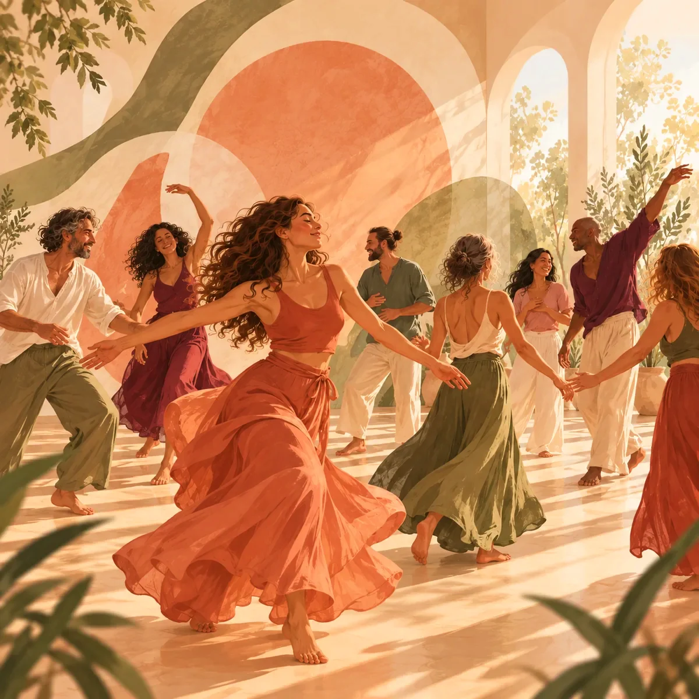

הדר לוריא
חוקרת את החיבור בין גוף, רגשות ותקשורת. מנחה תנועה, תקשורת מקרבת, יוגה ומדיטציה, ומביאה לקבוצה רגישות ועומק
המפגש הקרוב
מפגש חווייתי של מוזיקה, תנועה
וחיבור אנושי
מה אם אפשר להרגיש את החיים קצת אחרת?
ללמוד להיות
קצת יותר רכים עם עצמנו?
לזהות את הרגשות שלנו לפני שהם מנהלים אותנו
לדעת
מתי לעצורמתי לשחררמתי להתקרב
ומתי לשמור על הגבולות שלנו
להקשיב באמת לאנשים
להוריד חומות, לתת אמון
להביע חיבה ואהבה בלי לחשוש כל כך
ליצור קשרים שיש בהם יותר קרבה
להרגיש שהראש, הגוף והלב כבר לא מושכים כל אחד לכיוון אחר, אלא מתחילים לעבוד יחד
להעז להיות ספונטניים
להשתטותלצחוק על עצמנולאבד קצת שליטה
ולגלות שלא תמיד צריך להחזיק הכול
ולקום בבוקר עם
להרגיש שאנחנו לא רק עומדים בעומס של החיים, אלא גם נהנים מהם
את הדברים האלה אפשר להתחיל לגלות דרך חוויה
לא דרך עוד הסברים, ניתוחים או מחשבות על מה אנחנו צריכים לשנות בעצמנו
אלא דרך
הגוףהמוזיקההרגש
והמפגש עם אנשים אחרים
חוויה שמאפשרת לנו להתנסות
ולהתחיל לקחת משהו מהתחושות האלה גם אל החיים שמחוץ למפגש
כי לפעמים, כדי להכניס תנועה חדשה לחיים, אנחנו צריכים קודם להרגיש משהו חדש בתוכנו

בין העבודה, הבית והראש שלא נעצר, הימים מתחילים להיראות אותו דבר
בערב הזה יוצאים מזה לשעתיים, למקום אחר, בין אנשים אחרים, ובתנועה שמזיזה גם את מה שבפנים
ומתוך כל זה יכולות לצמוח חברות, קרבה ואולי גם אהבה
כל מפגש מוקדש לנושא אחר מהחיים, ונחווה אותו דרך תנועה, מוזיקה ומפגש ללא מילים
הסבר קצר על מה שהולך לקרות ושיתופים מהמפגש האחרון

מוזיקה מיוחדת ותרגילי תנועה פשוטים, בזוגות ובקבוצה, שמוציאים מהראש ומכניסים לגוף
כל רגע במפגש מונחה, אנחנו מסבירים כל תרגיל ומדגימים אותו

שובבות וכיף, הרבה תנועה, והדופק עולה
הקצב יורד, נכנסים פנימה, והלב נפתח, ומגלים את עצמנו מחדש, גם דרך האחרים
כאן הקסם מתחיל לקרות

הקצב עולה שוב, ויוצאים ערניים ומלאי חיים
פוגשים שוב את אותם אנשים וממשיכים מאותה נקודה, מפגש אחרי מפגש
ופנים חדשות מצטרפות
בין מפגש למפגש

במפגש הזה לומדים להתחבר מתוך אמון וביטחון. לדוגמה, אפשר לעצום עיניים ולהרגיש שיש על מי לסמוך, ואת התחושה הזו לוקחים איתנו הלאה, אל החיים
לנשים וגברים
בגילאי 35–55 שרוצים
לא צריך ניסיון בריקוד
הכול בהנחיה פשוטה, וכל אחד משתתף בקצב שמתאים לו
מפגש ביודנסה נמשך כשעתיים והוא לא שיעור ריקוד, אלא תהליך קבוצתי חווייתי שמשלב מוזיקה שנבחרה בקפידה, תנועה חופשית ומפגש אנושי
המפגש בנוי מארבעה שלבים, שמובילים אותנו בהדרגה דרך חוויות שונות של תנועה, רגש וחיבור
יושבים יחד במעגל, והמנחים מציגים את הנושא שילווה את המפגש, למשל שמחה, גבולות, אמון או חיבור לעצמנו ולאחרים. מי שרוצה מוזמן לשתף בקצרה איך מרגישים, אבל אין חובה לדבר
מתחילים בתנועה חופשית ופשוטה, ובהדרגה המוזיקה הופכת לקצבית ושמחה יותר. דרך תרגילים אישיים, בזוגות ובקבוצה אנחנו משחררים מתחים, מעוררים חיוניות ומכניסים משחק, צחוק וספונטניות
המפגש עם האחרים מתרחש דרך תנועה, קשר עין ומחוות טבעיות, בלי צורך במילים

המוזיקה הופכת לרכה ורגועה יותר, ואיתה גם התנועה. הקצב האיטי מאפשר לנו להירגע, להקשיב לגוף ולרגשות ולחוות רגעים של שקט, רוך, קבלה וקרבה אנושית
זהו שלב שמזמין אותנו להרפות מהמאמץ, להתחבר לעצמנו ולהרגיש בנוח גם בנוכחות אחרים
לקראת הסיום המוזיקה והאנרגיה עולות שוב בעדינות. חוזרים לתנועה משותפת, מסיימים במעגל ונפרדים מתוך תחושת חיבור, איזון והתחדשות, שאפשר לקחת איתנו גם אל חיי היומיום
ביודנסה
ביודנסה היא שער חווייתי להתפתחות אישית באמצעות תנועה, מוזיקה ומפגש אנושי, ללא מילים
ביודנסה היא הזמנה לחזור לגוף ולפתוח את הלב
ביודנסה היא מרחב בטוח, חם ומאפשר, שבו אפשר לנוע, להרפות, להרגיש, להשתחרר ולהרגיש בחיים
קסם הביודנסה לא נשאר בסטודיו. התרגול הופך למיומנות חיים: חוויות אלה עשויות לחלחל גם אל היומיום, אל מערכות היחסים שלנו ואל הדרך שבה אנחנו פוגשים את החיים
הביודנסה מאפשרת לנו להרחיב את האפשרויות להיות מי שאנחנו, להרגיש יותר חיים, ליצור קשר, ליזום, להיות ספונטניים, יצירתיים, מאושרים וחופשיים יותר
אין צורך לדעת לרקוד, רק ברצון לנוע ולהרגיש
הביודנסה משלבת מוזיקה, תנועה וקשר אנושי
כדי לטפח תחושת חיות, ביטחון ופתיחות
החוויה מזמינה אותנו להקשיב למה שאנחנו מרגישים,
לבטא את עצמנו ולהרגיש בנוח עם אחרים
את מה שחווים במפגשים אפשר לקחת גם ליומיום,
ליחסים שלנו ולדרך שבה אנחנו פוגשים את החיים
במפגש יש תרגילי תנועה

חוקרת את החיבור בין גוף, רגשות ותקשורת. מנחה תנועה, תקשורת מקרבת, יוגה ומדיטציה, ומביאה לקבוצה רגישות ועומק
יוצר ומנחה מפגשי מוזיקה, תנועה ושירה. לומד ומעמיק בדרך שבה מוזיקה ותנועה מקרבות בין אנשים, ומביא לקבוצה חום, משחקיות וגובה עיניים
הקבוצה השקטה
מצטרפים לקבוצת וואטסאפ לעדכונים:
מקבלים הודעה על המפגשים הקרובים,
בלי שיחות ובלי רעש
הגעתי בלי ממש לדעת למה לצפות. בהתחלה הרגשתי קצת מוזר, אבל אחרי כמה דקות פשוט שכחתי מזה. יצאתי עם חיוך שלא ירד לי כל הדרך הביתה
אני לא טיפוס של סדנאות ובטח לא של ריקודים. חבר שכנע אותי להגיע, ולהפתעתי ממש נהניתי. הייתה אווירה טובה ואנשים פתוחים. משהו שונה מהיציאות הרגילות
בתקופה האחרונה הרגשתי שכל השבועות נראים אותו דבר. הערב הזה היה בדיוק היציאה מהשגרה שהייתי צריכה. הכרתי אנשים חדשים והרגשתי קצת יותר חיה
מה שהפתיע אותי זה כמה קל היה להתחבר לאנשים בלי השיחות הרגילות של מי אתה ומה אתה עושה. פשוט היינו שם ביחד ונהנינו
חששתי שכולם יידעו לרקוד ורק אני אעמוד בצד. בפועל לא הרגשתי שמישהו בוחן אותי. עשיתי מה שהרגיש לי נכון ובסוף ממש לא רציתי שזה ייגמר
באתי בשביל ערב קצת אחר, לא בשביל לשנות את החיים. אבל יצאתי עם אנרגיה טובה ותחושה שבא לי לעשות עוד דברים חדשים. כבר מחכה לפעם הבאה
לא ידעתי בדיוק לאן אני מגיעה, אבל אמרתי לעצמי שבא לי לנסות משהו אחר. היה קצת מביך בהתחלה, ואז פתאום מצאתי את עצמי צוחקת עם אנשים שבכלל לא הכרתי
הגעתי אחרי יום עבודה ארוך וכמעט ביטלתי. אחרי עשר דקות כבר שכחתי מהיום שהיה לי. שעתיים בלי טלפון ובלי לחשוב על מיליון דברים
מה שאהבתי זה שלא הייתי צריכה להיות מעניינת או להרשים אף אחד. פשוט להיות שם, ליהנות מהמוזיקה ומהאנשים. זה היה ממש משחרר
חשבתי שזה יהיה קצת רוחני מדי בשבילי. בסוף זה היה הרבה יותר פשוט ממה שדמיינתי. מוזיקה טובה, אנשים נחמדים ואווירה שמאפשרת להשתחרר
באתי לבד וחששתי שכולם כבר מכירים את כולם. תוך כמה דקות הרגשתי חלק מהקבוצה. זה כנראה מה שהכי הפתיע אותי
לא זוכר מתי בפעם האחרונה עשיתי משהו כל כך שונה מהשגרה שלי. לא הכול הרגיש לי טבעי בהתחלה, אבל דווקא בגלל זה שמחתי שבאתי
יש משהו מיוחד בלהכיר אנשים בלי להתחיל מכל השאלות הרגילות. הרגשתי שנוצרו חיבורים בצורה הרבה יותר טבעית
הכי אהבתי שלא היה צריך להצליח בשום דבר. אף אחד לא בדק איך אני זז או מה אני עושה. פשוט נהניתי מהערב
באתי עם חברה, ויצאנו שתינו עם תחושה שעשינו משהו טוב בשביל עצמנו. בדרך הביתה כבר דיברנו על מתי הולכים שוב
אני בדרך כלל פחות מתחבר לפעילויות קבוצתיות כאלה. הופתעתי מכמה שהערב היה קליל וכמה מהר הזמן עבר. שמח שיצאתי מאזור הנוחות שלי
ממש לא. המטרה היא לא לרקוד יפה, אלא פשוט לנוע
בחלק מהתרגילים יכולה להיות הזמנה למגע עדין, בדרך כלל אחיזת ידיים. כל מגע הוא אופציונלי ובהסכמה, ואפשר לבחור שלא להשתתף בלי צורך להסביר
זה טבעי, וזה חלק מהעניין. כולנו מתחילים מאותה נקודה. עם הזמן נרגעים, וצומח משהו חדש: אמון, קלילות וחיוך שבא מעצמו
לא. המשתתפים נמצאים כרגע ללא זוגיות, אבל אין שום ציפייה שמשהו צריך לקרות
בגדים נוחים שקל לזוז בהם. כדאי להביא גם בקבוק מים